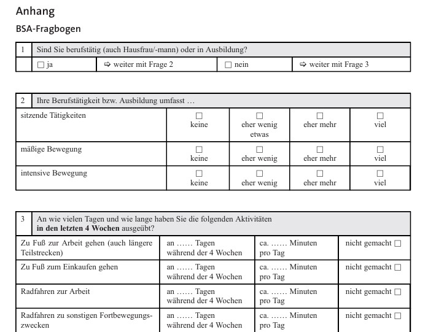
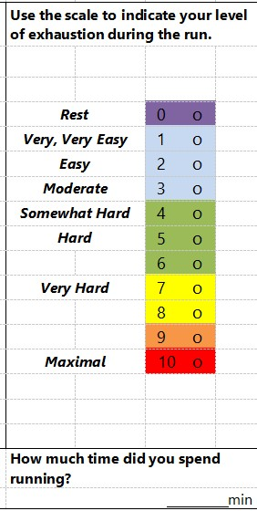

Messung und Definition sportlicher Aktivität
Enno Winkler
2026-04-20
Agenda
- Organisationsfragen
- Definitionen von physischer Aktivität (PA)
- Messmethoden: Von Doubly-Labeled-Water bis Fragebogen
- Fitnesstest: Praxisbeispiel
- Gruppenarbeit: Steckbrief einer Messmethode
- Hausarbeitsthemen
Orga
- Gruppenwechsel
- Hausarbeitsthemen
Rückblick
Wie trackt ihr eure Aktivität?
- App?
- Gedächtnis?
- Tagebuch?
Definition von physischer Aktivität (PA)
Die mechanistische Perspektive
- Klassische Definition: Aktivität der Skelettmuskeln mit Energieumsatz (Caspersen et al., 1985).
- Spezifizierung: Es muss eine Steigerung des Energieumsatzes vorliegen (Hollmann & Strüder, 2009).
- Vorteil: Klare Operationalisierung für biologische Studien.
Die Kritik am Reduktionismus
- Nur auf Energieumsatz zu schauen, ist “reduktionistisch” (Piggin, 2020).
- Vernachlässigt das komplexe Erleben und das Verhalten.
- Widerspricht einer ganzheitlichen Betrachtung.
Der biopsychosoziale Ansatz
- Abgrenzung zum biomedizinischen (defizitorientierten) Ansatz.
- Integration von drei Ebenen (Engel, 1977):
- Biologisch (Energieumsatz, Genetik)
- Psychisch (Affekt, Motive, Attribution)
- Sozial (Beziehungen, Kontext)
Eine ganzheitliche Definition
„Physical activity involves people moving, acting and performing within culturally specific spaces and contexts, and influenced by a unique array of interests, emotions, ideas, instructions and relationships.“
— Piggin (2020) (S. 5)
Messmethoden physischer Aktivität
Kategorisierung der Methoden (Kohl et al., 2000)
- Direkt: Körpermaße wie Herzfrequenz oder Schritte (objektiv).
- Indirekt: Fragebögen, Umrechnung/Auswertung nötig (subjektiv).
- Kriteriumsmethoden: Erfassung über des Energieumsatzes (DLW, Indirekte Kalometrie).
Validität vs. Anwendbarkeit
- Systematisierung nach Müller et al. (2010):
- Hohe Validität (Genauigkeit) = Geringe Anwendbarkeit (teuer, aufwendig).
- Beispiel: Doubly-Labeled-Water (DLW).
Subjektive Methoden: Fragebögen
- Vorteile: Ressourcensparend, große Stichproben möglich.
- Nachteile:
- Soziale Erwünschtheit.
- Erinnerungsverzerrung (Recall Bias).
- Eignung: Gut für Gruppenvergleiche, schwierig für Individualdiagnostik (Vanhees et al., 2005).
Fragebogen Beispiel 1 - BSA-Fragebogen
Fuchs et al. (2015)

Fragebogen Beispiel 2 - Session RPE
Foster et al. (2001) Foster et al. (2021)

Praxis-Input: Kapazitätstests bzws. Fitnesstests
- Physiologische Maße: Herzratenvariablität, VO2max, Laktat
- Wiederholung bestimmter Aufgaben, Erfassen Anzahl der Wiederholungen und Geschwindigkeit
- Praxisbeispiel aus den Special Olympics ➝ Welche Aspekte der Fitness werden hier gemessen? ➝ Ist das Verfahren fair? Was könnte an dem Fitnesstest noch verbessert werden?
Gruppenübung: Steckbrief
Findet euch in Gruppen von 3-4 zusammen.
Füllt den Steckbrief (zu finden auf der Kurs-Website) aus, so gut ihr könnt.
Ihr könnt euch aus Müller et al. (2010) ein Verfahren aussuchen oder andere Messverfahren für sportliche Aktivität recherchieren.
Plenum: Kontexte der Messung
Kontext 1: Interventionsstudie mit großer Stichprobe
Das Szenario
| Merkmal | Beschreibung |
|---|---|
| Fragestellung | Zusammenhang zwischen Bewegungsverhalten und Herz-Kreislauf-Erkrankungen |
| Stichprobe | n = 10.000 Personen aus der Allgemeinbevölkerung |
| Ressourcen | Geringes Budget pro Person (ca. 5-10€) |
| Personal | Keine spezielle Schulung der Erhebenden möglich |
| Dauer der Messung | Einmalige Erhebung, ca. 15-20 Minuten pro Person |
Kontext 2: Intervention mit älteren Menschen (80+ Jahre)
Das Szenario
| Merkmal | Beschreibung |
|---|---|
| Fragestellung | Effekt eines wöchentlichen Bewegungsprogramms auf die Alltagsaktivität |
| Stichprobe | n = 60 Personen, Durchschnittsalter 84 Jahre |
| Besonderheit | Leichte kognitive Einschränkungen (Erinnerungsvermögen eingeschränkt) |
| Technikaffinität | Mehrheit besitzt kein Smartphone |
| Messzeitpunkte | Vorher (T1) und nachher (T2) - 8 Wochen Intervention |
Kontext 3: Validierungsstudie im Labor
Das Szenario
| Merkmal | Beschreibung |
|---|---|
| Fragestellung | Ein neuer Kurzfragebogen zur Bewegungsmessung soll validiert werden |
| Konkret | Sie wollen die Kriteriumsvalidität Ihres Fragebogens prüfen |
| Stichprobe | n = 30 gesunde Erwachsene |
| Setting | Kontrollierte Laborumgebung |
| Ressourcen | Ausreichend Budget für hochpräzise Messungen vorhanden |
Kontext 4: Intervention mit Leistungssportler:innen
Das Szenario
| Merkmal | Beschreibung |
|---|---|
| Fragestellung | Zusammenhang zwischen Trainingsintensität und Regenerationsbedarf |
| Stichprobe | n = 20 Triathlet:innen im Wettkampftraining |
| Messdauer | 4 Wochen im normalen Trainingsalltag |
| Anforderungen | Echtzeit-Daten, hohe Genauigkeit, minimale Einschränkung |
| Zielgrößen | Intensität, Dauer, Häufigkeit der Belastung |
Wissens-Check
Tretet dem Spiel auf Quizlet bei.
Literaturverzeichnis
Caspersen, C. J., Powell, K. E., & Christenson, G. M. (1985). Physical activity, exercise, and physical fitness: definitions and distinctions for health-related research. Public Health Reports, 100, 126–131.
Engel, G. L. (1977). The Need for a New Medical Model: A Challenge for Biomedicine. Science, 196(4286), 129–136. https://doi.org/10.1126/science.847460
Foster, C., Boullosa, D., McGuigan, M., Fusco, A., Cortis, C., Arney, B. E., Orton, B., Dodge, C., Jaime, S., Radtke, K., Erp, T. van, Koning, J. J. de, Bok, D., Rodriguez-Marroyo, J. A., & Porcari, J. P. (2021). 25 Years of session rating of perceived exertion: Historical Perspective and Development. International Journal of Sports Physiology and Performance, 16(5), 612–621. https://doi.org/10.1123/ijspp.2020-0599
Foster, C., Florhaug, J. A., Franklin, J., Gottschall, L., Hrovatin, L. A., Parker, S., Doleshall, P., & Dodge, C. (2001). A New Approach to Monitoring Exercise Training. Journal of Strength and Conditioning Research, 15(1), 109–115.
Fuchs, R., Klaperski, S., Gerber, M., & Seelig, H. (2015). Messung der Bewegungs- und Sportaktivität mit dem BSA-Fragebogen: Eine methodische Zwischenbilanz. Zeitschrift für Gesundheitspsychologie, 23(2), 60–76. https://doi.org/10.1026/0943-8149/a000137
Hollmann, W., & Strüder, H. K. (2009). Sportmedizin. Grundlagen für physische Aktivität, Training und Präventivmedizin (5th Aufl.). Schattauer.
Kohl, H. W., Fulton, J. E., & Caspersen, C. J. (2000). Assessment of Physical Activity among Children and Adolescents: A Review and Synthesis. Preventive Medicine, 31(2), S54–S76. https://doi.org/10.1006/pmed.1999.0542
Krug, S., Jordan, S., Mensink, G., Müters, S., Finger, J., & Lampert, T. (2013). Körperliche Aktivität. In Bundesgesundheitsblatt - Gesundheitsforschung - Gesundheitsschutz (Bd. 56). Robert Koch-Institut, Epidemiologie und Gesundheitsberichterstattung. https://doi.org/10.1007/s00103-012-1661-6
Müller, C., Winter, C., & Rosenbaum, D. (2010). Aktuelle objektive Messverfahren zur Erfassung körperlicher Aktivität im Vergleich zu subjektiven Erhebungsmethoden: Current objective techniques for physical activity assessment in comparison with subjective methods. Deutsche Zeitschrift für Sportmedizin, 61(1), 11–18. https://www.germanjournalsportsmedicine.com/fileadmin/content/archiv2010/heft01/11_uebersicht_mueller.pdf
Piggin, J. (2020). What is physical activity? A holistic definition for teachers, researchers and policy Makers. Frontiers in Sports and Active Living, 2. https://doi.org/10.3389/fspor.2020.00072
Vanhees, L., Lefevre, J., Philippaerts, R., Martens, M., Huygens, W., Troosters, T., & Beunen, G. (2005). How to assess physical activity? How to assess physical fitness? European Journal of Cardiovascular Prevention & Rehabilitation, 12(2), 102–114. https://doi.org/10.1097/01.hjr.0000161551.73095.9c

Modul 08-006-0007